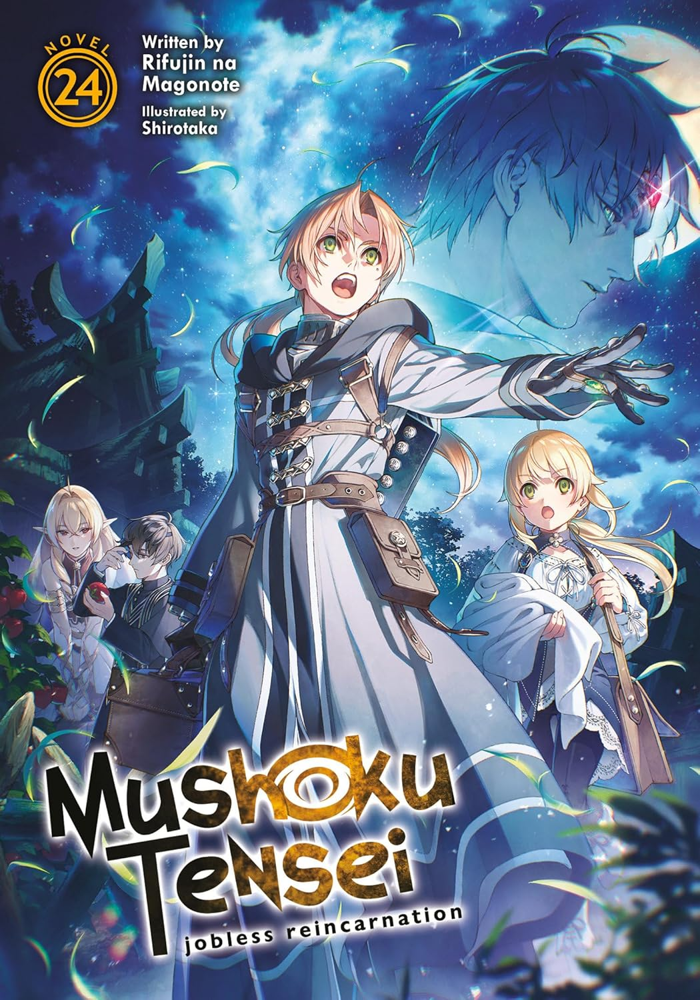

Mushoku Tensei: Jobless Reincarnation
by Aaron
Mushoku Tensei: Jobless Reincarnation
Chapter 1
After spending most of his previous life isolated from the world, a thirty-four-year-old man dies while trying to save strangers from danger. When he opens his eyes again, he discovers that he has been reborn in a world filled with magic, swords, and extraordinary creatures. This time, he is no longer an ordinary man living with regret. He has a second chance to build a life worth living.
Reborn as Rudeus Greyrat, he is raised by Paul and Zenith, a couple living in the peaceful countryside. Unlike most children, Rudeus retains the memories of his past life, allowing him to understand things far beyond his age. Determined not to waste this opportunity, he begins studying magic while still a young child.
Rudeus promises himself that he will face the world instead of running away from it again.
Rudeus quickly discovers that he has a natural talent for magic. Under the guidance of Roxy Migurdia, his first magic tutor, he learns to control water magic and develops skills that would normally take years to master. Roxy also teaches him that knowledge alone is not enough; he must gain experience and learn how to face the world beyond the safety of his home.
As Rudeus grows older, he meets Sylphiette, a quiet child with green hair who becomes one of his closest friends. He helps her learn magic and gradually discovers the value of trust and companionship. Their friendship becomes an important part of his new life, helping him overcome the loneliness that followed him from his previous existence.
Later, Rudeus travels to the city of Roa, where he becomes a tutor to Eris Boreas Greyrat, a fierce and stubborn young noblewoman. Although their early encounters are filled with arguments and misunderstandings, their training gradually brings them closer. Rudeus learns that teaching others requires patience, while Eris begins to respect his intelligence and magical abilities.
A JOURNEY BEYOND HOME
Just as Rudeus begins settling into his new life, a mysterious magical disaster known as the Mana Calamity suddenly strikes the Fittoa Region. People are scattered across distant lands, entire communities are thrown into chaos, and Rudeus finds himself transported to a dangerous continent alongside Eris.
With no easy way home, Rudeus must rely on his magic, intelligence, and the people he meets along the way. He encounters Ruijerd Superdia, a powerful warrior from a feared race who becomes their protector. Together, the three form a traveling group and begin searching for a way to return to their homeland.
Their journey takes them across unfamiliar territories filled with monsters, dangerous travelers, and unexpected challenges. Rudeus discovers that the world is far more complicated than the stories he once imagined. Not everyone can be trusted, and even powerful magic cannot solve every problem. He must learn to make difficult decisions and accept responsibility for the consequences of his actions.
As the journey continues, Rudeus faces setbacks that test both his confidence and his determination. The memories of his former life still influence the way he sees himself, but every friendship, hardship, and new discovery gives him another opportunity to grow beyond the person he used to be.
Rudeus Greyrat's reincarnation is not simply a chance to become powerful in a world of magic. It is an opportunity to rebuild himself, form meaningful relationships, and confront the fears that once controlled his life. Although his journey is filled with uncertainty and danger, he continues moving forward, determined to make his second life count.